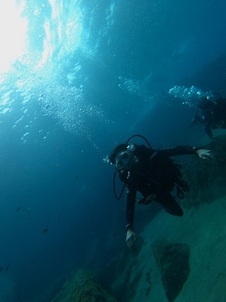

Mi nombre es Patricia García Fernández y vivo en Oviedo, Asturias. Mi UO es UO282210, por lo que mi correo académico es uo282210@uniovi.es mientras que mi correo personal es patriciagarfer16@gmail.com.
A nivel universitario estudio Ingeniería Informática del Software. Actualmente estoy en mi último año de carrera y planeo hacer un máster de Project Management, idealmente en Suecia, el próximo curso.
Aficiones
Aunque tengo muchas aficiones, las cinco que destacaría son las siguientes enumeradas.
Piano.
Escuchar música.
Lectura.
Viajar.
Deporte.

Cantantes y grupos favoritos
Como dije anteriormente, escucho una gran variedad de géneros musicales por lo que tengo varios cantantes y grupos favoritos. Algunos de ellos son los siguientes.
Aretha Franklin
I say a Little Prayer
A Rose is still a Rose
Respect
Kanye West
Bad Gyal
Mac Miller
Rick Astley
Asignaturas favoritas
En todo lo que llevo de grado, hay algunas asignaturas que puedo destacar como favoritas o más interesantes. Algunas de ellas son las aquí definidas
Dirección y Planificación de Proyectos Informáticos
Perteneciente a la materia de Práctica Profesional. Trata conceptos relativos a la dirección y planificación de proyectos como la gestión de RR.HH, costes, riesgos o calidad.
Arquitectura del Software
Perteneciente a la materia Ingeniería del Software. Los contenidos teóricos ahondan en los conceptos, tipos y validación de Arquitecturas del software, mientras que los prácticos están enfocados al desarrollo web utilizando tecnología descentralizada.
Ingeniería del Proceso Software
Perteneciente a la materia de Ingeniería del Software. Trata conceptos y metodologías como el Scrum, Proceso unificado y Técnicas de análisis de casos de uso y prototipados de interfaz.
Computabilidad
Perteneciente a la materia Fundamentos Informáticos. Sus contenidos son la Lógica de Proposiciones y de Predicados, Modelos de Computación y Funciones Computables, y Resultados Fundamentales y Resolubilidad de Problemas.
Autómatas y Matemáticas Discretas
Perteneciente a la materia Fundamentos Informáticos. Se tratan los Lenguajes Regulares y Libres de Contexto, Grafos y Lenguajes Recursivos y Recursivamente Enumerables.